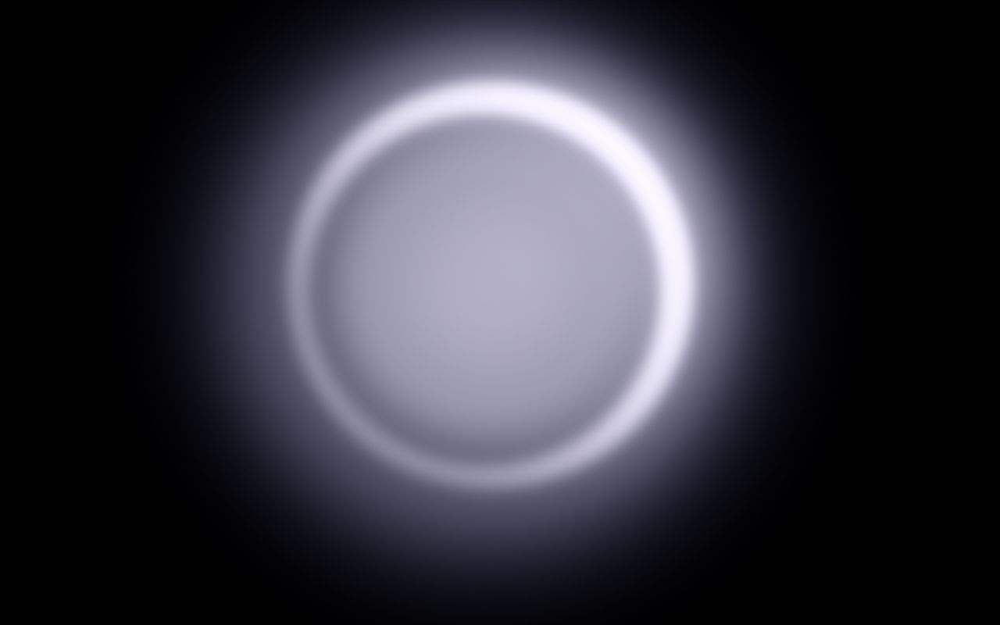
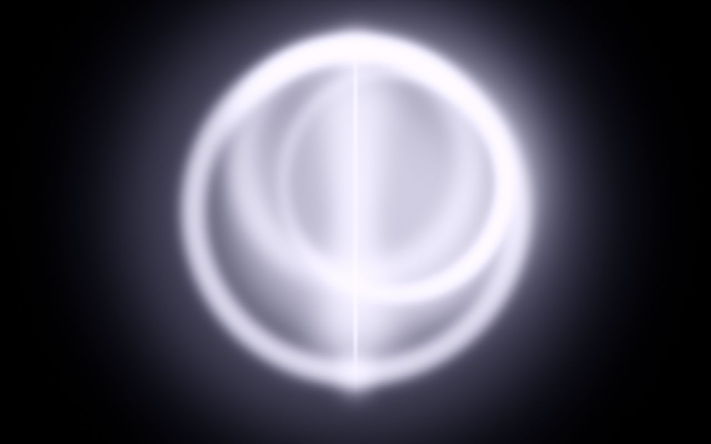
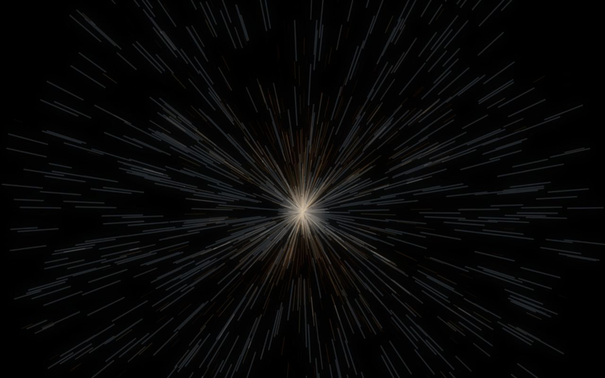

Thu Oct 1, 2026 · The Celebration at Dustin Yellin Studio, 153 Pioneer St, Red Hook. Nima on synth and piano · Lance on synths, strings, keys and guitar · Fresco on the kit · Jeff on flute, in and out · Edson on the AV theremin. Three acts of 20 minutes. Times are targets: if a beat runs long, the next one gives the time back, never the end. The invite.
Prelude, 7:30. Nima alone: drone, ambient, low stakes, people arriving and talking. Lance joins around 7:45. Edson goes to the instrument just before 8.

Starts slow and holds a tension. Edson speaks in the middle, the clip lands at the end, then everything goes up, and the kit walks on in the middle of the peak.

An abrupt drop out of the celebration into the cave. First the chaos, then you walk it down into something concentrated, sophisticated and beautiful. That is where the name is asked for. After the sending, hold the feeling, then from here on it's mostly up.

People are tired by now. Get them moving a little, then take them into a collective trance, then end on something Hans Zimmer epic.